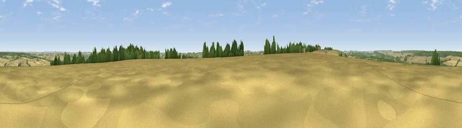

Bishopstone Down
#15200 in England · top 16% of its area beats it · near BurcombeThe view, rendered

A 360° render of this exact spot computed from the terrain model, tree cover and land cover — summer colours, afternoon light, calibrated against photographs of famous viewpoints. Real trees, hedges and buildings will differ in detail.
The panorama
Grey silhouette: terrain skyline in each direction (720 bearings, Earth curvature and refraction included). Dashed green: skyline with trees (+15 m) and buildings (+8 m) as obstacles. Blue strip: how far the ground is visible on each bearing.
Where the view opens
Wedge length = distance to the farthest visible ground on that bearing (vegetation-aware). Rings at 10, 25 and 50 km.
What fills the view
56% cropland · 21% grassland · 20% woodland · 3% built-up
Angular shares of the visible panorama (visual magnitude), not map area. Landscape diversity 0.47 (0–1 Shannon).
Key numbers
More beautiful places nearby
The staircase of upgrades: each row has a higher view potential than everything closer. Driving times are estimates from straight-line distance, calibrated against real road routing — check an actual route before setting out.
| Place | Direction | Drive | Score |
|---|---|---|---|
| Hydon Hill | W · 2 km | ~6 min | 61.2 |
| Marleycombe Hill | SSW · 8 km | ~16 min | 63.3 |
| Trow Down | SW · 12 km | ~22 min | 67.5 |
| Monk's Down | WSW · 16 km | ~28 min | 74.4 |
| Viewpoint near Berwick St John | WSW · 16 km | ~29 min | 78.2 |
| Viewpoint near Studland | S · 48 km | ~69 min | 80.9 |
| Viewpoint near Studland | S · 48 km | ~69 min | 82.2 |
| Ballard Down | S · 48 km | ~69 min | 83.2 |
51.06211, -1.90579 · source: osm peak · position refined by local search. Computed location — check access rights before visiting.